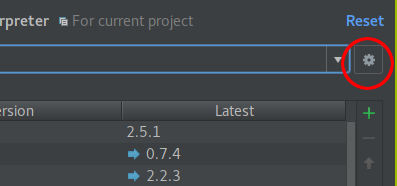
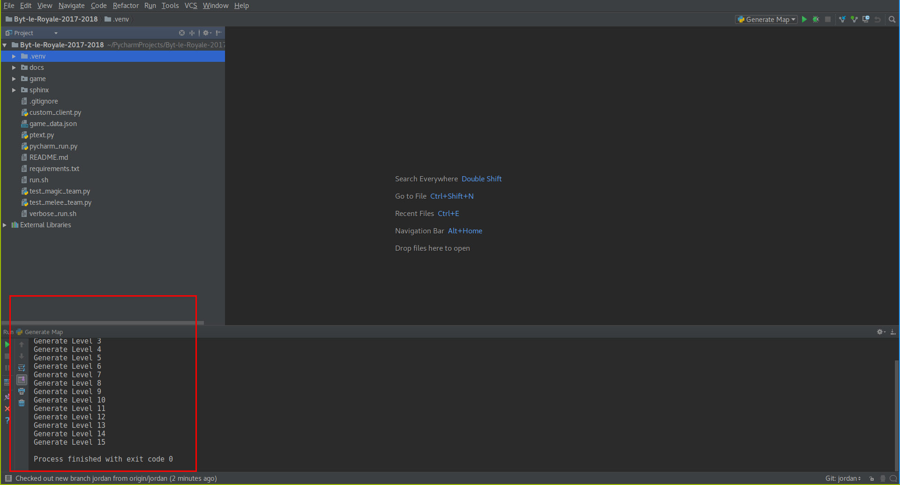

Running The Game¶
Installation¶
Note: The game has not been tested on MacOS. Linux or Windows are recommended.
Recommended Install (Windows & Linux)¶
- Install Pycharm Community Edition.
- Start Pycharm.
- Click “Checkout from version control and then git.

- Now we will clone the github repository. This copys the remote code repository to your local machine.
- Fill in fields
- Git Repository URL:
https://github.com/jghibiki/Byt-le-Royale-2017-2018.git - Parent Directory: Use the
...to select where you would like to download the code to. - Directory Name:
Byte-le Royale
- Git Repository URL:
- Click
Clone
- Fill in fields
- Now we need to set up a virtual environment for PyCharm. A virtual environment is a sandbox for installing python libraries.
- Click File -> Settings
- In the settings window, click on the triangle next to
Project: Byte-le ...and then clickProject Interpreter
- Click on the gear icon, then click on
Create Virtual Env
 - In the window that appears, fill in the following fields:
- Name:
.venv - Click
Ok

- Name:
- Now that we have set up a virtual environment, we need to set the working directory for some helper scripts.
- Select
Edit Configurationsfrom the dropdown menu in the upper right corner of the main menu.

- In the new window, for each script listed on the left, click on the
...next to the text box forWorking Directoryand navigate to the root of the repository, then click apply.

- Select
- To verify that everything is working, select
Generate Mapfrom the dropdown list in the upper right corner of the main window. Then click the green arrow next to the dropdown to run the script. A panel should pop up displaying the output of the script.


Windows¶
Note: This installation method is not recommended. The PyCharm installation will be much easier to use and provides the benefit of the PyCharm Debugger.
- Install Python 3.6: Download Python 3.6 or newer from the Python Official Website
- Install the Github Client
- Using the Github Client clone the game repository
https://github.com/jghibiki/Byte-le-Royale-2018.git
- Using a Windows Command Prompt, change directory to where you clone the repository.
- As a shortcut, browse to the directory using Windows Explorer, and hold shift while right clicking in the folder. This will add an option to the context menu that says “Open Command Propmt Here”. Click this button to open a command prompt in this directory.
- In the command prompt type the following to install game requirements.
pip install -r requirements.txt
Linux¶
Note: This installation method is not recommended. The PyCharm installation will be much easier to use and provides the benefit of the PyCharm Debugger.
- Install Python 3.6 via your distro’s package manager.
- Clone the repository
git clone https://github.com/jghibiki/Byte-le-Royale-2018.git
- Change directory into the repository and run
pip install -r requirements.txt
Running Game¶
Basic flow of how a game works:
- Start a server
- Start a client. Your client will connect to the server.
- The server then orchestrates the game based on the
game_data.jsonfile and responses from the client. The server also generates agame_log/directory which contains the game log which is used by the visualizer to visualize the game after it has finished running. - Wait for the client and server to finish running.
- Run the visualizer to visualize how the game played out.
Note: All of the following commands must be run from the root of the repository.
Generate Dungeon¶
Generates a dungeon game_data.json file. This file outlines a randomly generated dungeon.
python -m game.scripts.generate
Run Client¶
Runs the default client (custom_client.py).
python -m game.scripts.client
Run a custom client defined in the root of the repository (e.g. demo_client.py). Note that you do not include the .py.
python -m game.scripts.client --client demo_client
Run Visualizer¶
Run the visualizer in game_log/
python -m game.scripts.visualizer
Run the visualizer and visualize a different game log.
python -m game.scripts.visualizer --game-log copied_game_log_path
To adjust the brightness of the game (and possibly throw off the colors of your monitor - restart should fix) try adding --gamma 1.1. 1.0 should be the default display colorization. Less than 1.0 wil make the display darker, greater than 1.0 will make the display brighter. 2.0 Does some interesting things.